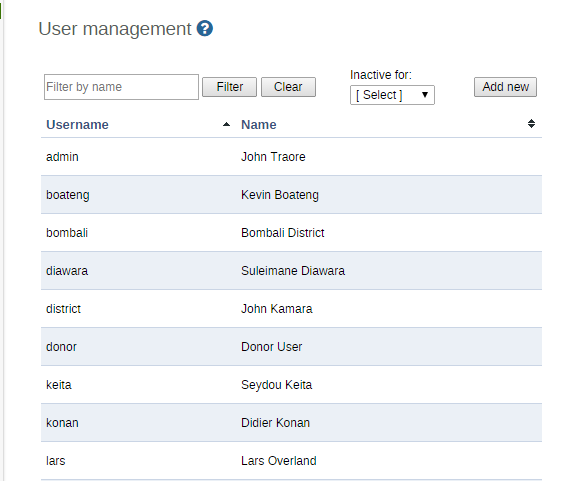

Select Users menu item
 |
User accounts already registered will appear as a list as seen below.
Search by user name
|  |
Open the Users app and click User.
Click Add new.
Select whether you want to fill in all the personal user information , or invite the user by email to complete the rest of the user information:
Create account with user details: Choose this if you would like to enter all the details of the new user such as name, password, etc.
If you choose this action, then enter the following information: user name, password, surname, first name, E-mail, OpenID account (if any) and mobile phone number (if any).
After you finish adding the user, the account will be ready for them to use with the user name and password that you supply.
Select Users menu item

Email invitation to create account: Choose this if you would like to send by email an invitation for the user to return to the system and finish setting up their user account. The user will then return to the system and fill in most of their personal information. The account that the user finishes setting up will be limited according to how you configure it below.
Note that you may not select this option to create an account with "critical" system authorities such as All, Scheduling Administration, Perform maintenance tasks, Merge organisation units, Eliminate duplicate data elements, SQL View Management, Change system settings, and List, Add or Delete user roles.
If you choose this action, then enter the email address to which the invitation should be sent. If you want to, you may also enter the user name that the account will have. If you leave the user name empty, then the user may choose their own user name when they respond to the invitation (as long as it is not taken already for another user.)
After you finish adding the new user, two emails will be sent to the address you provided. One contains a unique web link by which the user can return to the system and activate their account by entering the rest of their user information. The other email contains a unique code that they must enter into the system in order to complete the registration, after following the link in the first email. The user must finish setting up the account within three months, or the invitation becomes invalid.
Select Users menu item

Select an Interface language.
You can select a language into which fixed elements of the DHIS2 user interface have been translated.
Select a Database language.
You can select a language into which implementation-supplied items have been translated in the database, for example data element names or organisation unit level names.
In the Available roles section, double-click the user roles you want to assign to the user.
Select Data capture and maintenance organisation units.
Users must be assigned to at least one data capture and maintenance organisation unit. Users will have access to all children of the organisation units which have been assigned to them. For instance, if a user has been assigned to a district which has several facilities contained in the district, the user would have access to the district's data, as well as all of the facilities contained within the district. The data approval organisation units control for which organisation units the user can do data entry.
Select Data output and analysis organisation units.
You can assign a users to any number of data view organisation units. This controls which organisation units the user can view aggregated data for in analysis modules.
![[Important]](resources/images/admon/important.png)
Important Giving access to an organisation unit implicitly gives access to all organisation units below it in the organisation unit hierarchy. Thus, you should not select the descendants of an organisation unit which you have already selected. As an example, if the user has been assigned to a district, you should not (and not need to) select the facilities within that district.
Note that data view organisation units are optional. If you do not specify any, the user will have access to the full organisation unit hierarchy for viewing aggregated data. As with the data capture organisation units, you should not select descendant organisation units of a unit which you have already selected.
In several places in the analysis modules one can select "user organisation unit" for the organisation unit dimension. This mechanism will first attempt to use the data view organisation units linked to the current user. If not found, it will use the data capture organisation units. If the user has been assigned to multiple organisation units, the use of "user organisation unit" may result in unpredictable behavior.
User management screen

Click Show more options.
(Optional) In the Available user groups section, double-click the user groups you want to assign to the user.
(Optional) In the Available dimension restrictions for data analytics section, double-click the ?? groups you want to assign to the user.
You can restrict the values this user sees in data analytics by selecting dimensions that will restrict the users view. For example, let's say you have defined Implementing Partner as a category option group set, and you have shared with this user only one or more specific implementing partners (category option groups.) If you want to insure that the user does not see totals in analytics that include values from other groups, assign Implementing Partner to this user. This insures that any data visible to the user through DHIS2 analytics will be filtered to select only the Implementing Partner category option group(s) which are visible to the user.
User management screen

Click Add.
Open the Users app and find the type of user object you want to edit.
In the object list, click the relevant object and select Edit.
Modify the options you want.
Click Save.
You can disable a user. This means that the user's account is not deleted, but the user can't log in or use DHIS2.
Open the Users app and click User.
In the list, click the relevant user and select Disable.
Click OK to confirm.
Open the Users app and click User.
In the list, click the relevant user and select Profile.
You can view all users that have been assigned to a particular organisation unit.
Open the Users app and click User by organisation unit.
In the left-hand organisation unit tree, click an organisation unit.
A list of users which have been assigned to this organisation unit is displayed.
Open the Users app and click User.
In the object list, click the relevant user and select Assign search org units.
Click the organisation units you want the user to be able to search in.
Click Save.
You can delete the user that is currently logged into the system.
Open the Users app and click Delete current user.
Enter your password and click Delete.
Open the Users app and click User.
In the object list, click the relevant user and select Replicate.
Enter a new user name and password for the cloned user account.
Click Replicate.
In the object list, click the user you just created and click Edit.
Modify the options you want.
Click Save.
Open the Users app and find the type of user object you want to delete.
In the object list, click the relevant object and select Remove.
Click OK to confirm.
Open the Users app and find the type of user object you want to view.
In the object list, click the relevant object and select Show details.
Open the Users app and find the type of user object you want to modify.
In the object list, click the relevant object and select Sharing settings.
(Optional) Search for a user group and select it, then click the plus icon. The user group is added to the list.
External access (without login)
Change the settings for the user groups you want to modify.
None:
Can view: Everyone in the user group can view the object
Can edit and view: Everyone in the user group can view and edit the object
Click Save.